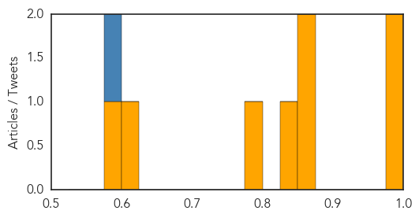
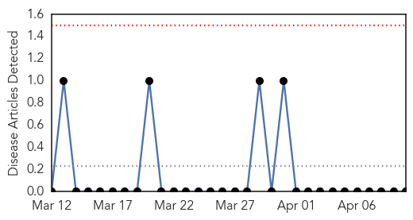

Swine Flu
30-Day Web Trend
0 alerts, 0 warnings

30-Day Twitter Trend
1 alerts, 0 warnings

Article Locations

Article Confidences
Top Articles:
- 0.997
- Humans give sea otters the flu
- 0.994
- Pill to beat flu is a step closer
- 0.869
- Why stockpiling anti-flu drugs may not be a waste of money
- 0.855
- Tamiflu: 'Research is flawed', says manufacturer
- 0.833
- Report suggests billions wasted on ‘ineffective’ Tamiflu drug
- 0.782
- Dallasblog.com, the Dallas, Texas news blog and Dallas, Texas information source for the DFW Metroplex.
- 0.601
- The dangers of homeopathic vaccines
- 0.593
- Why Swine Flu Tamiflu 'Sloppy Science' is the Tip of the 'Bad Pharma' Iceberg
Top Tweets:
- 0.592
- Your study cannot answer that. You looked at seasonal flu trials. Landscape's changed. H1N1 pandemic experience supports NAI
Yellow Fever
30-Day Web Trend
0 alerts, 0 warnings

30-Day Twitter Trend
0 alerts, 0 warnings

Article Locations

Article Confidences

Top Articles:
-
No articles found for Apr 10, 2014
Top Tweets:
-
No tweets found for Apr 10, 2014